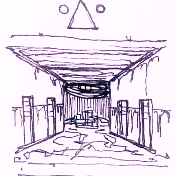

The hallway is more untouched than the entrance, more intact, but it still smells like dirty water. You can even see parts of the old murals under the graffiti. There are doors in tight rows along the side walls. They’re almost all locked or sealed or something, for safety I guess. One of them is ajar though, and another has been removed entirely. At the end of the hallway is an opening into a sort of alcove or something, a weird round room with a metal staircase in the center of it. It’s very sparse. There’s a warning sign on a board that’s meant to block it off but it’s all rotten away.